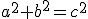

parent nodes: Intro9Advanced | StructureGraphs | WikidPadSpecials | WpInsertions
External Graphical Applications
Contents:
Back
General
WikidPad allows access to some graphical applications that take some sort of script to generate images. You can include the script in a wiki and let the applications generate the appropriate image to show it in HTML preview and export.
The supported applications are:MimeTeX: mathematical formulasGraphViz: directed and nondirected graphsPloticus: plots and chartsGnuplot: mathematical plots
Download and installation
The mentioned applications are not part of the WikidPad release itself, you must download it separately. The URLs are:
Download the application of your choice.Put the binaries in an arbitrary folder on your computer. If you do not plan to use them outside of WikidPad you can create a folder in the program directory and put them there.Start WikidPad and open the "Options" dialog. Below the "Plugin options" entry in the list on the left you see four entries, one for each of the programs. Click the appropriate options, to go to it's option page.For MimeTeX, Ploticus and Gnuplot enter the full path to the executable including the executables name. For GraphViz only enter the path to the directory containing the executables in the first text field of the page. You can change the names of the executables in their respective fields if they deviate from the default names.
Usage as insertion
The programs are "called" by using insertions. During preview or html export the insertion is replaced by the resulting graph of the graphical application. The format for the insertions is:
MimeTeX: [:eqn: " script "]GraphViz: [:dot: " script "], [:neato: " script "], [:twopi: " script "], [:circo: " script "], [:fdp: " script "]Ploticus: [:ploticus: " script "]Gnuplot: [:gnuplot: " script "]
The "scripts" must follow the syntax for the respective program, please see the documentation of those applications for details. They should be enclosed in quotation characters to allow them to contain reserved characters or new lines.
Remarks
• Export to html
When exporting to html, the rendered image files are put in a subdirectory called "volatile" in the target directory for the html files. If such a "volatile" directory already exists, all of its contents (including subfolders) are deleted, this to avoid cluttering it up with old versions of the files!
• Errors and warnings
If the GraphViz or Ploticus applications return errors or warnings, then the insertion is not replaced with the resulting image, but with the error/warning text. To suppress warnings/errors use the appendix "noerror" after the main value of the insertion.
Top
MimeTex
General
MimeTeX is an application with which mathematical formulas can be generated within the text of a wiki page.
Example
You should know that [:eqn:"a^2 + b^2 = c^2"] is important! results in:You should know that  is important!Pythagoras (of Samos) already knew that!
Whereas this [:eqn:"$frac{-bpmsqrt{b^2-4ac}}{2a}$"] resulting in:
Top
GraphViz
General
GraphViz is a set of applications to generate directed and nondirected graphs. A helpful tutorial for creating directed graphs with GraphViz's dot utility is: Howto directed graphs. You can download all or only some of them as you like.
Example
This "dot" insertion (with "noerror" appendix)[:dot:"
digraph {
a -> b
b -> c
b -> d
d -> a
}
"; noerror]
Results in:
Top
Ploticus
General
Ploticus is an application to generate plots and charts like those that you may have seen in your favorite spreadsheet program.
Example
This "ploticus" insertion[:ploticus:"
#proc areadef
title: Annual Revenues, in thousands
rectangle: 1 1 5 2
xrange: 0 4
yrange: -5000 15000
yaxis.stubs: incremental 5000
yaxis.grid: color=pink
xaxis.stubs: text
ABC Corp
NetStuff
MicroMason
#proc getdata
data: 6430 -780 13470
#proc processdata
action: rotate
#proc bars
lenfield: 1
color: dullyellow
labelword: $ @@N
crossover: 0
"]
Results in:
Top
Gnuplot
General
Gnuplot is an application to generate mathematical plots.
Special details
Unfortunately Gnuplot always issues a warning about a missing console (?) so you have to use the appendix "noerror" in each case. Windows users can use the windows binary and set the gnuplot option to the "wgnuplot.exe" executable; this also does not issue this warning. In both cases however you will be unable to retrieve error messages from Gnuplot if the script isn't correct.
At the beginning of each Gnuplot script the following lines are automatically inserted to set output to a PNG-file that is then shown in the wiki page: set terminal png
set output 'filename.png'
where filename.png is replaced by the generated temporary file name.
Example
This "gnuplot" insertion[:gnuplot:"
set key right nobox
set samples 100
plot [-pi/2:pi] cos(x),-(sin(x) > sin(x+1) ? sin(x) : sin(x+1))
"]
Results in:
Top
For programmers
If you want to create your own plugin to handle insertions, look in the "extensions" directory. The plugins "MimeTexCGIBridge.py", "GraphvizClBridge.py", "GnuplotClBridge.py" and "PloticusClBridge.py" control the external applications. The plugin "ExampleInsertion.py" handles the insertion key "testexample" and is another example how to handle insertions by a plugin.
Value: this 0. appendix: is 1. appendix: a simple 2. appendix: test
Top
Settings
Options
Application settings: Plugins, Gnuplot
• Path to Gnuplot
The path to the Gnuplot executable.
Application settings: Plugins, GraphViz
• Path to GraphViz
The path to the GraphViz directory of executables.
• Name of dot executable
The name of the dot executable; default = dot.exe.
• Name of neato executable
The name of the neato executable; default = neato.exe.
• Name of twopi executable
The name of the twopi executable; default = twopi.exe.
• Name of circo executable
The name of the circo executable; default = circo.exe.
• Name of fdp executable
The name of the fdp executable; default = fdp.exe.
Application settings: Plugins, MimeTex
• Path to MimeTex
The path to the MimeTex executable.
Application settings: Plugins, Ploticus
• Path to Ploticus
The path to the Ploticus executable.
Top
previous: Back
parents: Intro9Advanced, StructureGraphs, WikidPadSpecials, WpInsertions
[alias: Ploticus][alias: MimeTeX][alias: GraphViz][alias: Gnuplot]
[camelCaseWordsEnabled: false]
[help.status: done]